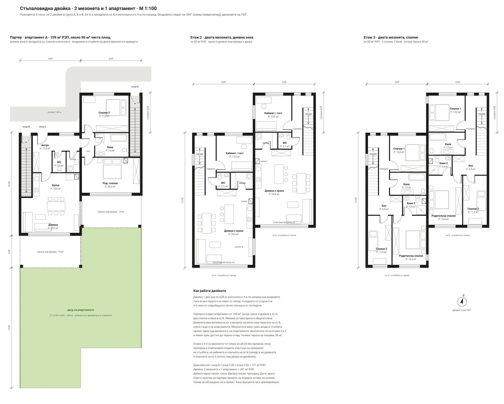

Мезонети на юг, заедно: 18 жилища, 2 708 м²
Вариантът от програмата даде 15 жилища и 2 257 м². Тук алеята е преместена на западната граница и сградите получават една широка ивица вместо две тесни. Така групите стават по 4 оси, а всички коли са по пътя. Резултатът е 6 еднакви стъпаловидни двойки, всяка с 2 мезонета отгоре и 1 апартамент на партера. Всяко жилище има свой двор на юг-югоизток.
Ситуация

Групите са наредени така, че между тях да има поне 4,14 м, ъгъл в ъгъл. Пред всяка група има 5 м за входове и пътека 1,50 м, а между двора на една група и входовете на следващата има поне 12 м двор. Група А се влиза от алеята или направо от паркинга, група Б от паркинга през общата градина, група В от алеята или по пътечката от група Б.
Стъпаловидната двойка

Апартаментът заема двете оси, но не по права линия: ос Б е 4 м по-напред. Затова дневната зона е в едната ос, а спалните в другата, свързани с врата в общата стена. Двата мезонета са типа от плана за 28.20, с добавени прозорци там, където стъпалото оставя калкана открит.
Двор и зимно слънце на всяко жилище
| Двойка | Група | Мезонети | Градинка на мезонета | Апартамент | Двор на апартамента | Слънце 21 дек., часове |
|---|---|---|---|---|---|---|
| 1 | А | М1, М2 | 45 и 45 м² | А1 · 109 м² | 55 м² + 38 м² тераса | 2,6 и 2,2 |
| 2 | А | М3, М4 | 45 и 45 м² | А2 · 109 м² | 55 м² + 38 м² тераса | 3,8 и 5,0 |
| 3 | Б | М5, М6 | 45 и 45 м² | А3 · 109 м² | 55 м² + 38 м² тераса | 8,9 и 5,0 |
| 4 | Б | М7, М8 | 40 и 30 м² | А4 · 109 м² | 55 м² + 38 м² тераса | 5,0 и 5,0 |
| 5 | В | М9, М10 | 30 и 45 м² | А5 · 109 м² | 55 м² + 38 м² тераса | 8,9 и 5,0 |
| 6 | В | М11, М12 | 45 и 45 м² | А6 · 109 м² | 55 м² + 38 м² тераса | 3,8 и 2,2 |
Дворът на апартамента е 4,50 м след еркера в двете оси, плюс терасите под еркерите (2 × 19 м², покрити). Градинката на мезонета е до 12 м след еркера; където следващата група е по-близо, е по-къса. Мезонетът има още 38 м² тераса на покрива. Слънцето е на витрината на партера, на 0,80 м над пода, при ясно небе; засенчват еркерите и всички сгради в имота.
Спрямо варианта от програмата
| От програмата | Доизпипан | |
|---|---|---|
| Жилища | 15: 10 мезонета, 5 апартамента | 18: 12 мезонета, 6 апартамента |
| РЗП · Кинт | 2 257 м² · 0,58 | 2 708 м² · 0,69 |
| Групи | 5 групи по 2 оси, от двете страни на прохода | 3 групи по 4 оси, 6 еднакви двойки |
| Алея | по средата, на мястото на прохода | по западната граница, с обръщало |
| Паркиране | 16: по пътя и по алеята | 18: всички по пътя |
| Най-малко разстояние между групи | правилото е поне 4,00 м | 4,14 м |
| Слънце 21 дек., най-малко / средно | 2,2 / 5,0 ч | 2,2 / 5,0 ч |
| Градинка на мезонета | 35–100 м² | 30–45 м² + 38 м² тераса на покрива |
| Двор на апартамента | 80 м² | 55 м² + 38 м² тераси под еркерите |
- Алеята е на западната граница, не по средата. Проходът от 4 м разделяше имота на две ивици по около 20 м, в които влизат групи само по 2 оси. Като е отстрани, остава една ивица от 42 м и групите стават по 4 оси.
- Колите са по пътя. 18 места в предните 5 м, които и без това не се застрояват: по едно на жилище, с два пешеходни прохода по 1,50 м между тях. Място за гости няма: редицата по пътя е 48 м и повече не побира. Алеята остава за хора, доставки, боклук и пожарна, с обръщало отзад. До най-далечната врата се ходи 95 м от паркинга по пътеките.
- Една двойка, повторена 6 пъти. Еднакъв план, еднаква конструкция, по-евтино строителство. Всеки апартамент е под своите два мезонета.
- Повече от 12 оси не влизат. Пробвах с програмата стъпала от 0 до 4 м и групи по 2, 3 и 4 оси, при същите правила. Винаги се стига до 12. Ако групите са по 3, жилищата са 20 вместо 18 (4 апартамента по 109 и 4 по 55 м²), при същата площ.
- Какво не е проверено: пожарното разстояние между групите (4,14 м ъгъл в ъгъл при 9,90 м височина), дали пожарната приема 95 м пешеходен път до най-далечния вход, водопровод и канал. Това е идея за обсъждане, не проект.